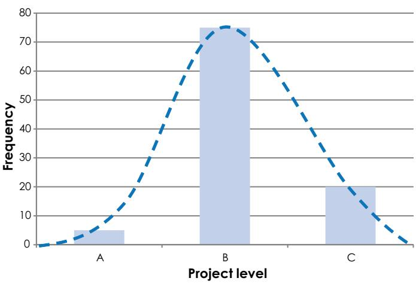
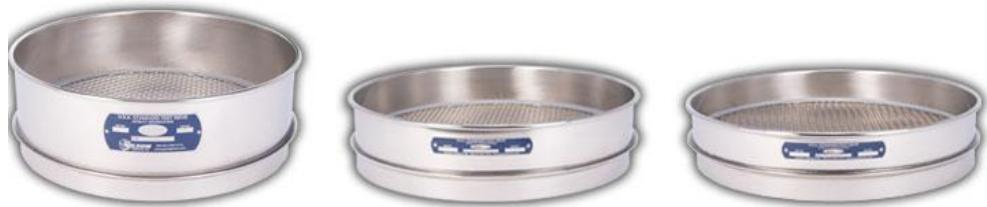
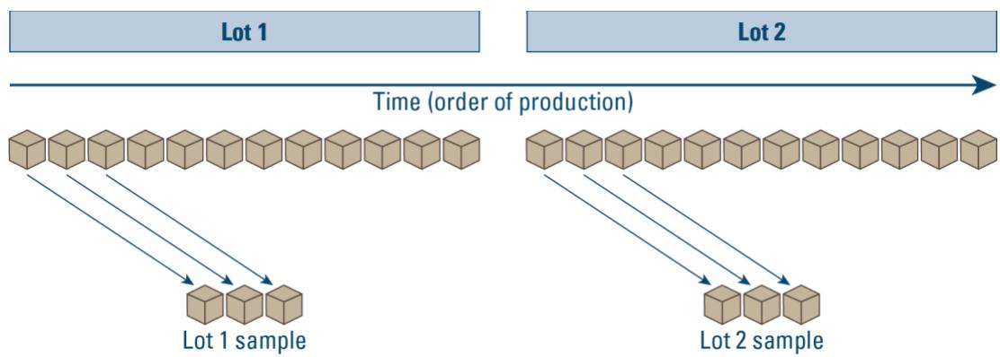
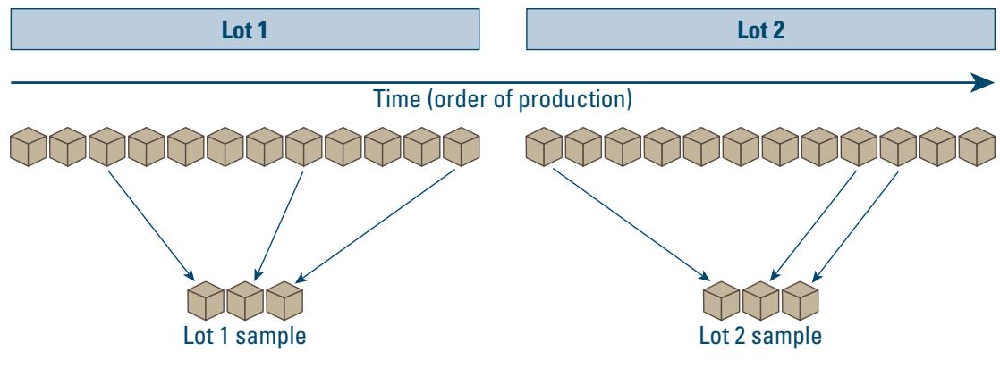
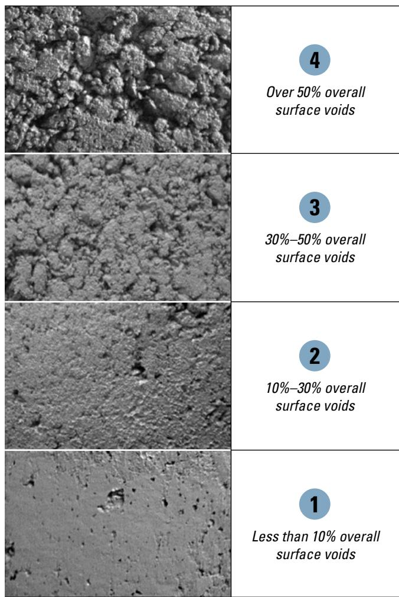
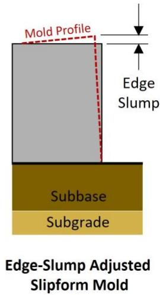

Project Quality Assurance Through Testing and Specification Compliance
Project Quality Assurance Through Testing and Specification Compliance is a systematic, independent program that continuously monitors concrete materials, mix‑design proportions, fresh‑property parameters and hardened‑pavement attributes against the contract specifications to ensure every pavement element conforms and to prevent premature failures [2]. The system relies on statistically valid random sampling, certified laboratory or qualified personnel testing, control‑chart based statistical process control, and immediate corrective actions when results cross action or stop limits, while maintaining a clear separation between QA oversight and contractor QC to provide unbiased verification [4]. Its defining characteristics are the ongoing measurement of slump loss, unit weight, air content, strength, thickness, smoothness and less‑easily measured factors such as steel joint placement or air‑void structure, comprehensive documentation in a QA database with unrestricted owner access, and acceptance decisions based on numeric limits, statistical criteria and visual standards [1] [5].
Sources (8)
Purpose and quality objectives
The QA program evaluates and controls the concrete material, mix‑design, production, placement and hardened‑pavement characteristics required by the specifications. It monitors concrete material properties such as slump loss, unit weight, set time and admixture dosages (“Many problems can be avoided by regularly monitoring slump loss, unit weight, set time, and admixture dosages.”) and places emphasis on strength, thickness, smoothness and air content (“Emphasis is normally placed on strength, thickness, smoothness, and air content because it is easy to compare these test results to specified values”). It also includes less‑easily measured factors such as steel joint placement, air‑void structure, permeability and curing (“Other quality factors that are often overlooked because they are not as easily measured include steel placement for joints, air‑void structure, permeability, and curing.”).
The program verifies that constituent materials meet approved limits for gradation, durability, moisture content and strength (“It verifies that the constituent materials – aggregates, cement, supplementary cementitious materials and admixtures – meet approved gradation, durability, moisture‑content and strength limits”) and monitors fresh‑mix parameters including slump, air content, workability factor and coarseness factor (“it monitors fresh‑mix parameters such as slump, air content, workability factor (WF) and coarseness factor (CF)”). Batch proportions are checked against the approved mixture design each day (“verifying that batch proportions match the approved mixture design (daily)”), and equipment operation is tracked through vibrator frequency monitoring (“Vibrator frequency – constant data collection with monitors or manually at least twice daily.”) and cure‑addition coverage rates (“Calculate an average coverage rate each time cure is added to the tank.”).
Placement operations are controlled for line/grade conformity, surface texture, mortar‑rich surface tolerance, edge slump and joint‑face deformation (“it controls the batching, mixing time, equipment condition and placement operations including line/grade conformity, surface texture, mortar‑rich surface tolerance, edge‑slump and joint‑face deformation”). Reinforcement and load‑transfer dowels are inspected for correct placement and alignment (“inspecting reinforcement and load‑transfer dowels for correct placement and alignment”).
For the hardened pavement, the program confirms hard‑metric criteria such as compressive and flexural strength, slab thickness, plan‑grade elevation and ride quality (“and it confirms that the hardened pavement satisfies hard‑metric criteria such as compressive and flexural strength, slab thickness, plan‑grade elevation and ride‑quality”). Smoothness is evaluated by straightedge or profilograph measurements (“Smoothness as determined by the 12‑foot straightedge or the California type profilograph.”). Additional performance indicators include surface resistivity, permeability, air‑void structure and heat signature (“acceptance criteria are defined around key mix attributes—concrete strength, slab thickness, air content and aggregate gradation—and are supplemented with laboratory measurements such as permeability, set time, air‑void structure and heat signature.”).
For specialized lightweight cellular concrete, the QA program controls as‑cast density and 28‑day unconfined compressive strength (“controls the as‑cast density and the 28‑day unconfined compressive strength of the lightweight cellular concrete (LCC)”). Across all material and process checks, sampling and testing are performed by certified laboratories or qualified personnel and must be approved by the engineer to ensure conformance (“Sampling and testing of materials, equipment, and processes should be performed to verify that FDR construction is meeting the project specifications.”; “A certified testing laboratory and other qualified personnel should perform on‑site tests and inspections throughout the construction process.”). Statistical Process Control and control charts are used to detect variation and trigger corrective action (“Statistical Process Control links the suite of tests to detect any material or construction‑process variation early enough to trigger corrective actions”). [1][2][3][4][5][6][8]
[1] — Ch. 3 (p. 136), Ch. 9 (pp. 263–265); [2] — Ch. 1 (pp. 31–41), Ch. 2 (pp. 53–73), Ch. 3 (pp. 94–131), Ch. 4 (pp. 144–145), Ch. 5 (pp. 175–261), Ch. 6 (pp. 307–329), Ch. 7 (pp. 337–357), Ch. 8 (pp. 360–361), App. A (pp. 376–383), App. B (pp. 394–404), App. D (pp. 423–445), App. E (pp. 447–458), App. G (pp. 479–489), App. I (pp. 524–527); [3] — Ch. 7 (pp. 86–93); [4] — Ch. 1 (pp. 15–16), Ch. 2 (pp. 25–30), Ch. 4 (pp. 47–74), Ch. 6 (pp. 93–95), App. B (p. 120), App. D (pp. 135–140); [5] — Ch. 6 (pp. 58–59); [6] — 1. Quality Assurance Concepts (pp. 11–13), 2. Factors Influencing Long-Li… (pp. 31–37), 4. Pre-Paving (p. 57), 5. Plant Site and Mixture Prod… (p. 80), App. D (p. 128); [8] — Ch. 4 (pp. 26–28), Ch. 6 (pp. 56–60)
The overarching quality requirement addressed by Project Quality Assurance through testing and specification compliance is to guarantee that every concrete pavement element conforms to the applicable project specifications and performance criteria, thereby preventing premature pavement failures and the acceptance of non‑conforming work. The guides agree that this is achieved by a systematic program that:
- Monitors key fresh‑property parameters so that “significant change in a test result may indicate potential problems” and “Many problems can be avoided by regularly monitoring slump loss, unit weight, set time, and admixture dosages.”
- Uses a “system used by a contractor to monitor, assess, and adjust their production or placement processes to ensure that the final product will meet the specified level of quality,” with “QC includes sampling, testing, inspection, and corrective action (where required) to maintain continuous control of a production or placement process.”
- Requires that “every airfield concrete pavement be constructed in strict accordance with the applicable FAA/DOD specifications, achieving all contract‑specified performance criteria” and explicitly addresses “the potential problem of non‑conforming work arising from uncontrolled variability.”
- Mandates statistically valid sampling plans and independent acceptance testing so that construction meets defined limits while avoiding Type I (rejecting acceptable work) and Type II (accepting deficient work) errors: “By mandating statistically valid sampling plans and independent acceptance testing, the QA effort ensures that construction meets defined acceptance limits while avoiding Type I (rejecting acceptable work) and Type II (accepting deficient work) errors.”
- Insists on independent oversight: “Acceptance testing may also be performed by contractor personnel, but then independent testing is needed for verification,” and “Independent QA oversight further prevents placement of non‑conforming materials or processes that could degrade pavement performance”; the QA function must remain separate from QC – “The QA function must be independent and tasked to be responsible for assuring the Owner that the Contractor and the Contractor QC is performing the work in conformance with the contract documents.”
- Requires independent or engineer‑witnessed sampling: “ensure that every construction operation and material conforms to the project specifications by using independent or engineer‑witnessed sampling and testing,” with immediate reporting of failures – “contractor should immediately notify the engineer of any failing tests and subsequent remedial action” – and unrestricted access to test data – “the owner agency should have unrestricted access to the testing laboratory, split samples, and all test results associated with quality control and quality assurance on the project.”
- Verifies final product acceptability through agency‑performed verification sampling: “Verification sampling and testing: Sampling and testing performed by the agency, or its designated agent, to evaluate the acceptability of the final product,” supported by unbiased independent assurance – “Independent assurance (IA): Activities that are an unbiased and independent evaluation of all the sampling and testing (or inspection) procedures used in the QA program.”
- Treats each production batch as a statistically defined lot: “Each Lot of material will represent material from the same source, be produced or obtained under the same controlled process, and will possess normally distributed specification properties,” recognizing that “Excessive variability for a given characteristic may result in the work being out of specification.”
- Enforces density and strength limits for specialized mixes: “ensure that each batch of lightweight cellular concrete meets the prescribed density and unconfined compressive‑strength limits” and, when limits are exceeded, mandates corrective action – “If the average as‑cast density is outside the specified tolerance… the contractor shall reject the batch or make an adjustment to the mix before placement.”
- Confronts testing bias and variability: “designed to confront the inherent variability and potential bias in concrete pavement testing that can lead either to the inadvertent acceptance of non‑conforming work or the unnecessary rejection of acceptable work,” and removes sampling bias by requiring random sampling – “By mandating statistically valid, random sampling, the program removes sampling bias.”
- Applies action and stop limits so that deviations are investigated promptly – “If a result crosses an action limit, work is allowed to proceed but the cause of the variation must be determined and corrected.”
- Shifts from simple acceptance testing to true process control: “preventing premature pavement failures by shifting quality control from simple acceptance testing to true process control,” demanding that “the concrete placed matches the approved mixture design and stays within specified fresh‑property limits” and that changes are monitored with statistical tools – “Monitoring change through the use of additional test procedures and Statistical Process Control (SPC) techniques is the basis for implementing the suite of tests.”
In sum, the quality requirement is to keep concrete pavement within all specified material, mix‑design, fresh‑property, strength, density, smoothness, and durability limits by employing continuous, statistically based monitoring, independent verification, and timely corrective action before any non‑conforming condition can affect the finished product. [1][2][3][4][5][6][8]
The figure below illustrates the various sources of construction variability that must be managed to maintain these quality standards.
 Sources of Construction Variability [6]
Sources of Construction Variability [6]
The figure displays four distinct bell-shaped curves labeled Material, Process, Sampling, and Testing. These individual distributions are shown to combine into a single, wider distribution at the bottom labeled Composite Variability. The variability observed in concrete paving projects is attributable to four sources: material, process, sampling, and testing. This concept supports the systematic monitoring of fresh-property parameters by illustrating that test results include inherent variability from multiple stages.
[1] — Ch. 3 (p. 136), Ch. 9 (pp. 263–265); [2] — Ch. 1 (pp. 31–41), Ch. 2 (pp. 53–73), Ch. 3 (pp. 94–131), Ch. 4 (pp. 144–145), Ch. 5 (pp. 175–261), Ch. 6 (pp. 294–329), Ch. 7 (pp. 337–357), Ch. 8 (pp. 360–361), App. A (pp. 376–383), App. B (pp. 394–404), App. D (pp. 423–445), App. E (pp. 447–459), App. G (pp. 479–489), App. I (pp. 524–527); [3] — Ch. 7 (pp. 86–93); [4] — Ch. 1 (pp. 15–16), Ch. 2 (pp. 25–32), Ch. 4 (pp. 47–74), Ch. 6 (pp. 93–95), App. A (p. 117), App. B (p. 120), App. D (pp. 135–140); [5] — Ch. 6 (pp. 58–59); [6] — 1. Quality Assurance Concepts (pp. 11–13), 2. Factors Influencing Long-Li… (pp. 31–37), App. D (p. 128); [8] — Ch. 4 (pp. 26–28), Ch. 6 (pp. 56–60)
Scope and applicability
Project Quality Assurance Through Testing and Specification Compliance applies to all concrete pavement projects. It is required for every material that enters the concrete mix—cement, aggregates, admixtures, water—and to each step of the batching, placement, and finishing processes, as well as for any change in mix or other condition that could affect performance. The scope extends to all concrete‑pavement materials—including mined or excavated aggregates, cement, supplementary cementitious materials, admixtures and other mixture components—as well as any blended or base‑course aggregates used in the pavement structure, and it also covers off‑site fabricated elements such as steel members, precast slabs, dowel bars, drainage components and other standard manufactured items. The procedure governs the entire suite of construction processes such as batching, handling, placement, consolidation, finishing, curing, joint sawing, dowel‑bar installation, edge treatment, grade preparation, and remedial actions while the concrete is plastic; it further includes every process that places, compacts, cures, installs or handles these items—mixing, stockpiling, vibration, texture application, curing‑compound use, saw‑cutting, joint sealing, equipment set‑up and operation, and post‑placement finishing steps. Materials and processes are monitored at all stages of the batching and paving process, with testing of concrete and individual materials during trial batching and production, and with random sampling plans (e.g., ASTM D3665) used for fresh‑mix and hardened‑concrete verification. QA activities are tailored to project‑specific conditions—agency requirements, project size, duration, traffic volume, risk level, and construction staging—and the level of testing (Level A, B or C) is matched to those factors so that “It is not necessary to perform the same level of testing on a low‑volume road as on an urban interstate.” The procedure also applies whenever project conditions introduce risk—such as schedule constraints, material or equipment variability, performance‑standard requirements, design flaws or omissions, unplanned events like equipment breakdowns or wet concrete loads, and adverse weather—that could affect conformance to specifications. Specific pavement components such as lightweight cellular concrete (LCC) are included; the contractor and an independent engineer must sample each day’s first batch for as‑cast density and unconfined compressive strength according to ASTM C495 and take corrective action if limits are exceeded. Aggregate testing (durability, soundness, abrasion, gradation), reinforcing steel and dowel‑bar submittals, mix‑design parameters (water‑cementitious ratio, air content, resulting strength), fabrication, placement, curing, pavement smoothness, and monitoring for premature cracking or spalling are all subject to QA. Acceptance testing focuses on key material properties—strength, thickness, smoothness, air content—and on construction aspects that are less readily measured such as steel joint placement, air‑void structure, permeability, and curing. [1][2][3][4][5][6][8]
The following figure illustrates the hypothetical distribution of project levels for a state highway agency.

Hypothetical distribution of project levels for a state highway agency [8]The figure displays a frequency distribution with three categories labeled A, B, and C along the horizontal axis. A large central bar represents Level B projects, while smaller bars represent Levels A and C on either side.
[1] — Ch. 9 (pp. 263–264); [2] — Ch. 1 (pp. 31–41), Ch. 2 (pp. 53–73), Ch. 3 (pp. 94–129), Ch. 4 (pp. 144–145), Ch. 5 (pp. 175–261), Ch. 6 (pp. 294–329), Ch. 7 (pp. 337–357), Ch. 8 (pp. 360–361), App. A (pp. 376–381), App. B (pp. 394–404), App. D (pp. 423–445), App. E (pp. 447–458), App. G (pp. 479–489), App. I (pp. 524–527); [3] — Ch. 7 (p. 93); [4] — Ch. 2 (pp. 26–30), Ch. 4 (pp. 47–74), Ch. 6 (pp. 93–95), App. B (p. 120), App. D (pp. 137–139); [5] — Ch. 6 (pp. 58–59); [6] — 1. Quality Assurance Concepts (pp. 11–12), App. D (p. 128); [8] — Ch. 4 (p. 26), Ch. 6 (pp. 56–60)
Project Quality Assurance through testing and specification compliance is required in most contracts, especially when the owner conducts acceptance testing of measurable properties such as strength, thickness, smoothness, and air content. It is mandatory on all concrete pavement projects governed by FAA or DOD specifications, and it must be applied whenever contract specifications mandate sampling or testing of materials, equipment, or processes to verify that construction meets those specifications. The requirement also extends to projects that incorporate a comprehensive QC specification or an agency‑approved QC plan that obligates the contractor to perform more than simple acceptance tests, and where test strips are explicitly called for. For geotechnical applications the engineer shall sample and test the LCC for quality assurance on independent and split samples, with at least one independent or split sample per day of placement. The procedure must be in place at least during the mixture‑design and mixture‑verification stages for every project.
Testing may be optional for the contractor when the same tests are performed by contractor personnel, provided that independent verification is obtained (23 CFR 637). Optionality also arises when project‑specific “notes to the engineer” are invoked, allowing QA testing to be optional, and when a mixture has already been prequalified or approved through a certified producer’s protocol, permitting laboratory testing to be limited in scope or waived. Selective sampling may be used in certain circumstances, but such samples are excluded from acceptance pay‑factor calculations and must be followed by additional random samples.
The QA process is inappropriate when a project does not fall under FAA specifications or federal funding, when design‑stage durability tests are applied as routine construction‑phase checks, when a high‑level test suite is imposed on a low‑volume road, or when stockpile segregation or degradation invalidates sampling.
Limitations governing the application include: quantitative acceptance thresholds that dictate which data set is used (within 10 % use QA results; 10–20 % use QC results; > 20 % invoke special procedures); testing variability must not be used to penalize the contractor, and variability can be reduced by using a single technician for all samples in a lot. Laboratories must be accredited and the owner agency must have unrestricted access to the laboratory, split samples, and all test results. Random sampling is mandatory for acceptance testing; aggregate sieve analysis must be performed at a frequency of every 1,500 yd³ and fresh‑mix tests (slump, microwave water content, unit weight, air content) at each 500 yd³ sample. Control charts require a stable run of fifteen to twenty‑five consecutive samples before three‑sigma limits are set; any observation outside those limits triggers immediate corrective action. All contract documents must define sampling frequencies, tolerances, acceptance criteria, action limits, suspension limits, and corrective actions, and testing cannot exceed what is explicitly defined in the contract. [1][2][3][4][5][6][8]
The following figure illustrates the typical equipment used for these mandatory sieve analyses.

Typical concrete aggregate sieves with the recommended full-height frame on the left (source: Gilson 2023). [2]The image displays three stainless steel sieve frames of varying heights, each containing a mesh screen.
[1] — Ch. 9 (pp. 263–264); [2] — Ch. 1 (pp. 31–41), Ch. 2 (pp. 53–73), Ch. 3 (pp. 128–129), Ch. 4 (pp. 144–145), Ch. 5 (pp. 175–238), Ch. 6 (pp. 316–329), Ch. 7 (pp. 341–357), Ch. 8 (pp. 360–361), App. D (pp. 429–434), App. E (pp. 447–449), App. G (pp. 479–489), App. I (pp. 524–527); [3] — Ch. 7 (pp. 86–87); [4] — Ch. 4 (pp. 47–74); [5] — Ch. 6 (pp. 58–59); [6] — 1. Quality Assurance Concepts (pp. 11–12); [8] — Ch. 4 (p. 28), Ch. 6 (pp. 56–60)
Test methods and procedures
Project Quality Assurance requires a systematic sequence of standardized test methods, calibrated equipment, and documented step‑by‑step procedures.
Laboratory certification and personnel – Laboratories must be certified by AASHTO (or an equivalent body) and comply with ASTM C1077. Technicians are required to hold recognized certifications such as those issued by ACI or the National Institute for Certification in Engineering Technologies. All tests are performed according to the prescribed standard method, for example flexural strength evaluated using ASTM C78‑02, and results are interpreted against 95 percent confidence limits.
Sampling plan – Material samples are obtained following the random‑sampling procedure of ASTM D3665. Aggregate sampling follows ASTM D75 (coarse and fine) with reduction to test size per ASTM C702. Fresh concrete sampling uses ASTM C172, with each sublot’s location recorded by slab ID and X/Y coordinates on a standard test report form.
Aggregate verification suite – The full set of aggregate tests includes: - Sieve analysis (ASTM C136) using standard or Gilson sieves and a No. 200 sieve; - Bulk density and voids (ASTM C29); - Specific gravity and absorption for coarse (ASTM C127) and fine aggregates (ASTM C128); - Abrasion loss (ASTM C131), soundness (ASTM C88), flat/elongated particle content (ASTM D4791); - Organic‑impurity screening (ASTM C40) with sodium‑hydroxide solution; - Field decantation for fines (ASTM C117); - Moisture content (moisture cans), gradation‑band, minus‑200 sieve, deleterious‑material testing, and, when required, freeze‑thaw durability (ASTM C666). Results are plotted on the Coarseness‑Workability diagram; any point outside the acceptance parallelogram triggers resampling.
Batch plant and mixing equipment – The plant must meet ASTM C94 or ASTM C685 specifications and be NRMCA‑certified. Calibration records for all weighing devices, moisture meters complying with COE CRD‑C 143, and a digital amp meter (≥0.1 A resolution) are required. Within‑batch uniformity is verified per COE CRD‑C 55.
Fresh concrete testing – For each lot (≤1,000 yd³) slump, air content, temperature, and placement consistency are measured on randomly selected samples. Slump is recorded at 5, 10, 15, and 20 minutes; air content is measured both at discharge and behind the paver; unit weight is tested twice per day; vibrator frequency is logged at least twice daily.
Field tests after placement – Surface smoothness is determined by a 12‑foot straightedge or California type profilograph. Edge slump and joint‑face deformation are inspected against UFGS 32 13 14.13 criteria. Core extraction follows ASTM D3665 for random sampling and ASTM C42 for core extraction, conditioning, and testing. Two cores per sublot (eight per lot) are measured according to ASTM C174 (eight thickness readings) and tested for flexural strength using the cylinder‑beam correlation established during mix design; flexural strength may also be evaluated directly by ASTM C78‑02.
Curing‑compound application – The curing compound must meet FAA (ASTM C309 Type 2 Class A/B) or DOD (COE CRD‑C 300/ASTM C309) requirements. Application equipment is a self‑propelled sprayer calibrated per ASTM D2995 Method A and volume‑sampling per ASTM D974. Discharge is measured over a 10‑ft × 10‑ft area and compared to the FAA requirement of 1 gal/150 sq ft; nozzle pressure or travel speed is adjusted accordingly.
Lime‑controlled concrete (LCC) density and strength – The first batch each day and hourly thereafter are sampled per ASTM C495. At least two as‑cast density tests are performed, and eight 3‑in × 6‑in cylinders are molded for each strength sample; compressive strength is the average of four properly cured cylinder breaks tested at 28 days.
Performance‑related (PEM) testing – Recognized standards such as AASHTO PP‑84 prescribe tests for unit weight, gradation, air content at discharge and behind the paver, w/c ratio, vibrator frequency, compressive strength, and thickness. Unit weight is tested twice per day; all samples are obtained randomly in accordance with ASTM D3665.
Statistical validation and control charts – An F‑test compares variances followed by a t‑test (pooled‑variance if variances equal, separate‑variance otherwise); a paired t‑test is used for split‑sample comparisons. Acceptance requires QA and QC means to be within 10 %; differences >20 % invoke corrective actions. For each characteristic a control chart is constructed with central lines, action limits at ±2σ, and suspension limits at ±3σ; any out‑of‑control signal triggers the corrective procedures defined in the sampling plan.
Acceptance decision – Only when all measured values satisfy specified tolerances—aggregate properties, fresh‑mix uniformity, smoothness, edge slump, core strength, curing‑compound coverage, density and strength of LCC batches, statistical agreement, and control‑chart limits—are lot results formally accepted; otherwise work stoppage, repair, or resampling is required. [1][2][4][5][6][8]
[1] — Ch. 9 (pp. 264–265); [2] — Ch. 2 (pp. 70–73), Ch. 3 (pp. 128–129), Ch. 5 (pp. 183–261), Ch. 6 (pp. 316–329), Ch. 7 (pp. 349–353), App. A (p. 376), App. D (pp. 431–436), App. E (pp. 449–452), App. G (pp. 479–489), App. I (pp. 524–527); [4] — Ch. 4 (pp. 70–74), App. D (p. 137); [5] — Ch. 6 (pp. 58–59); [6] — 1. Quality Assurance Concepts (pp. 11–12), 2. Factors Influencing Long-Li… (p. 37), 4. Pre-Paving (p. 57); [8] — Ch. 6 (pp. 56–60)
Sampling and testing frequency
Project Quality Assurance determines where, how many and how often to sample by first segmenting the work into discrete lots as mandated by the applicable FAA or UFGS specifications; each lot is limited to a production shift not exceeding 1,000 cubic yards (or another specified quantity) and is further divided into four roughly equal sub‑lots for acceptance testing. The QC manager then prepares a detailed sampling plan that spells out the number of samples, the sampling process, exact locations, measurement procedures and the testing interval. Sampling points are chosen either by random number tables in accordance with ASTM D3665 (or equivalent) or by functional zones such as lay‑down areas for batch‑ribbon uniformity testing, ensuring the material tested represents what will be placed. Random sampling locations should be the same as those used for agency tests and acceptance testing is conducted on independent random samples, not fixed‑interval samples. The first batch placed each day is sampled, and the engineer may designate additional locations for independent verification; hourly checks for as‑cast density and every two hours for unconfined compressive strength are also required.
The quantity of material taken follows the lot size and test type – routine tests use standard sample sizes while more demanding evaluations require larger specimens – with one specimen per sub‑lot as a baseline. Contractor must obtain at least two density tests per batch and mold eight cylindrical specimens for each strength sample, and a minimum of two batches are sampled daily. For aggregate gradation, samples are collected from stockpile or delivery points at a fixed volume interval—every 1,500 yd³ of each aggregate type—and fresh‑concrete properties (slump, water content, unit weight, air) are tested every 500 yd³ of concrete placed.
Frequency is driven by a three‑phase control plan (preparatory, initial, follow‑up) that calls for daily observations during construction and testing intervals prescribed by the lot‑based control‑chart specifications. Sampling and testing frequencies should be appropriate for the type of work being performed; measurements are made at intervals that allow the contractor to remain confidently aware of the status of the process and to be alerted to trends indicating that adjustments are needed. Continuous performance checks such as vibrator‑frequency monitoring require constant data collection or manual observation at least twice each day. Sampling intensity is increased when results approach specification limits or when statistical control indicates drift. When a process change occurs, the QA plan shifts to selective sampling—testing the next two or more batches—to verify the effect; these selective samples trigger additional random sampling within that discrete population. [2][4][5][6][8]
The following figure illustrates the concept of biased or selective sampling within this quality assurance framework.

Illustration of biased sampling within production lots. [2]The figure depicts two distinct production lots arranged along a timeline, with arrows indicating that samples are selected from the beginning of each lot rather than being distributed randomly throughout the sequence. This visualizes biased (or selective) sampling, which allows human judgment to influence the samples used and is appropriate for use to collect data at startup or after changing a process. In the context of project quality assurance, this method helps investigate issues or establish start-up properties but should not be used for acceptance decisions.
[2] — Ch. 2 (pp. 70–73), Ch. 3 (pp. 128–129), Ch. 4 (pp. 144–145), Ch. 5 (pp. 183–261), Ch. 6 (pp. 316–329), Ch. 7 (pp. 345–351), App. A (pp. 376–381), App. D (pp. 431–436), App. G (pp. 479–489), App. I (pp. 524–527); [4] — Ch. 2 (pp. 25–32), Ch. 4 (pp. 62–74), Ch. 6 (pp. 93–95), App. B (p. 120), App. D (pp. 137–139); [5] — Ch. 6 (pp. 58–59); [6] — 1. Quality Assurance Concepts (pp. 11–12), 4. Pre-Paving (p. 57); [8] — Ch. 6 (pp. 56–60)
The selection of samples or measurements under project QA is driven by a documented, statistically based sampling plan that ties each sample to a defined lot, volume or length of work. The guides require the plan to be random so that every unit within the lot has an equal chance of selection, eliminating human bias and providing data suitable for acceptance decisions, control charts, and pay‑factor calculations. Random draws may be performed with random‑number generators, spreadsheets, software programs, calculators or random‑number tables, and sample locations are identified by slab ID and transverse (X) and longitudinal (Y) coordinates, station, offset or depth within each sub‑lot in accordance with ASTM D3665.
A production lot is defined as a shift of work not exceeding the specified quantity and is subdivided into four approximately equal sub‑lots; material from each sub‑lot is used for acceptance testing. For characteristics such as pavement thickness, two cores per sub‑lot (eight cores per lot) are taken and averaged to represent the lot’s thickness. Sampling frequencies are linked to production volume—for example, aggregate gradation is checked every 1,500 yd³ delivered and fresh‑concrete properties measured roughly every 500 yd³—ensuring each sample reflects the actual lot being placed.
For certain materials, such as low‑cement content concrete, samples are taken systematically from the first batch placed each day; density is sampled every hour and strength every two hours, with eight cylindrical specimens molded for each strength sample and tested at 28 days. Independent or split‑sample testing of a comparable first‑batch specimen verifies compliance with density and unconfined compressive strength tolerances; final acceptance rests on validated contractor QC results and the engineer’s QA results that meet those criteria.
When a process change is being verified or out‑of‑spec limits need definition, selective (consecutive) sampling may be employed, but those selective samples are excluded from the acceptance calculation and must be followed by additional random samples within that specific population to confirm quality. Throughout, the sampling and testing must be performed at a frequency capable of providing confidence that the results represent the whole of the work. [2][4][5][6][8]
The figure below illustrates the random sampling process that ensures test results accurately represent the entire population.

Random sampling of production lots over time. [4]The figure illustrates a random sampling method where specimens are selected from different points within two distinct production lots, rather than taking consecutive samples from the start or end of a batch. This visualizes the concept of period-in-time or population sampling, which is used to ensure that results represent the whole of the work and provide confidence in quality verification.
[2] — Ch. 2 (pp. 70–73), Ch. 3 (pp. 94–129), Ch. 4 (pp. 144–145), Ch. 5 (pp. 183–261), Ch. 6 (pp. 313–329), Ch. 7 (pp. 337–351), App. A (p. 376), App. B (pp. 394–396), App. D (pp. 431–436), App. E (pp. 447–452), App. G (pp. 479–489), App. I (pp. 524–527); [4] — Ch. 2 (pp. 30–32), Ch. 4 (pp. 51–74), Ch. 6 (pp. 93–95), App. D (pp. 137–139); [5] — Ch. 6 (pp. 58–59); [6] — 1. Quality Assurance Concepts (pp. 11–12); [8] — Ch. 6 (pp. 56–60)
Acceptance criteria and tolerances
Project Quality Assurance determines acceptability by applying a hierarchy of numeric limits, statistical criteria and visual standards that are drawn from the contract specifications and reinforced through independent testing.
Numeric limits – The guides require concrete‑related properties to fall within explicit tolerances: fine‑aggregate fineness modulus “is limited to between 2.5 and 3.4”; coarse‑aggregate abrasion loss “no more than 40%” (ASTM C131) and soundness losses “cannot exceed 12 % in sodium‑sulfate and cannot exceed 18 % in magnesium‑sulfate”; flat or elongated particles larger than the 3/8‑inch sieve are limited to “20 % by weight”. Concrete mix performance must achieve a flexural strength at least equal to the approved average (typically 750 psi at 28 or 90 days) and may not be more than 20 psi below that target. Dimensional tolerances demand pavement elevations stay within “±½ inch of design grade” and surface smoothness is verified on each production lot (≤1,000 cy yd). For geotechnical materials the as‑cast density must lie inside the specification tolerance and unconfined compressive strength at 28 days must meet the specified limit; any failure renders the material unacceptable.
Statistical criteria – When specifications call for statistical acceptance, a “percent‑within‑limits (PWL)” approach is used, assuming normal distribution of test data so that the mean and standard deviation estimate the percent within bounds. Acceptance ranges are defined by “95 percent confidence limits” for duplicate results (the d2s value). Control‑chart methodology is required: action limits are typically set at “±2 standard deviations (±2s)” (or ±2.5σ at user discretion) and suspension limits at “±3 standard deviations (±3s)”; all individual measurements must remain inside the suspension limit, and two consecutive points outside an action limit trigger work stoppage. Reported variability must be “less than 1/10 of the variability of the other sources combined.” Agreement between contractor QC and government spot‑check results must be within 10 % (or tighter, ≤4 %) before QA data are used for acceptance. Sample means, standard deviations and confidence intervals (e.g., 95 % upper and lower limits) are evaluated for each batch; a result beyond the three‑sigma upper limit on a control chart is flagged as special‑cause variability requiring corrective action.
Visual standards – In addition to measured values, visual inspection is mandated. The surface should have a “white‑sheet‑of‑paper” appearance with no mottling, bug holes or mortar‑rich areas exceeding 1/8 inch (immediate correction if >¼ inch). Surface smoothness is assessed with the 12‑foot straightedge or profilograph and must meet the lot‑based verification criteria. Edge slump, joint face deformation and plan‑joint alignment are also inspected against defined limits. When a result crosses an “Action” limit work may continue but the cause of variation must be identified; crossing a “Stop” limit results in rejection of the pavement and halting of further work. [1][2][4][5][6][8]
The following figure illustrates the rating standards for the box test.

Visual rating standards for surface voids on concrete samples. [1]The figure displays four distinct grayscale images of concrete surfaces, each paired with a numerical score and a corresponding percentage range describing the overall surface voids.
[1] — Ch. 9 (pp. 263–265); [2] — Ch. 2 (pp. 70–73), Ch. 3 (pp. 94–131), Ch. 5 (pp. 183–261), Ch. 6 (pp. 313–329), Ch. 7 (pp. 349–353), App. D (pp. 431–436), App. E (pp. 447–449), App. G (pp. 488–489), App. I (pp. 524–527); [4] — Ch. 2 (pp. 25–30), Ch. 6 (pp. 93–95), App. A (p. 117), App. D (p. 140); [5] — Ch. 6 (pp. 58–59); [6] — 2. Factors Influencing Long-Li… (p. 37); [8] — Ch. 6 (pp. 56–60)
Project Quality Assurance evaluates every test result by first comparing the measured value to the numeric limits set in the specification. Individual measurements are plotted on control or run charts that display a target line and upper/lower limits; points outside those specification limits trigger immediate corrective or stop‑work decisions. Lot performance is assessed by aggregating independent samples: lot averages (e.g., the mean of compressive‑strength cylinders, density from at least two tests, or the average of 7‑day strength converted to an equivalent 28‑/90‑day flexural strength) are then compared directly with the required average values in the specification. When statistical acceptance criteria such as percent‑within‑limits, PWL, or a 2 % difference between contractor and government results are stipulated, the lot’s average and its standard deviation are calculated—often assuming normal distribution—and used to estimate the proportion of material within limits. Variability is monitored through statistical process control: sample means, standard deviations, and confidence intervals (typically 95 % limits or three‑sigma limits) define action and stop thresholds; if variability exceeds these bounds or a trend approaches a stop limit, corrective actions are required and work may be halted until the cause is corrected. The evaluation also considers the precision and bias of each test method, using confidence limits to express the acceptable range of difference between repeat tests. [1][2][4][5][6][8]
The figure below illustrates contractor risk within the FAA’s Percent Within Limits acceptance approach.
 Figure illustrating the contractor’s risk of rejecting acceptable material in a Percent Within Limits (PWL) acceptance approach using strength test results. [2]
Figure illustrating the contractor’s risk of rejecting acceptable material in a Percent Within Limits (PWL) acceptance approach using strength test results. [2]
The figure displays a normal distribution curve representing the variation in quality of material within a lot, centered at the Acceptable Quality Level (AQL). It demonstrates that even when the true lot quality is acceptable, there is a probability that test samples will fall below the specification limit due to variability. This visualizes the contractor’s risk of having acceptable material rejected by the acceptance approach, which is a key component of project quality assurance.
[1] — Ch. 9 (pp. 263–265); [2] — Ch. 1 (pp. 37–41), Ch. 3 (pp. 128–131), Ch. 5 (pp. 183–237), Ch. 6 (pp. 313–329), Ch. 7 (pp. 348–356), App. D (pp. 431–434), App. E (pp. 449–452), App. G (pp. 488–489), App. I (pp. 524–527); [4] — Ch. 2 (pp. 25–32), Ch. 6 (pp. 93–95), App. A (p. 117); [5] — Ch. 6 (pp. 58–59); [6] — 1. Quality Assurance Concepts (pp. 11–12), 2. Factors Influencing Long-Li… (p. 37); [8] — Ch. 4 (p. 26), Ch. 6 (pp. 56–60)
Quality control and process monitoring
Project Quality Assurance maintains consistent quality by continuously monitoring a comprehensive set of material, mix, process, equipment, environmental and post‑placement characteristics throughout production and construction.
Materials are tracked from receipt through placement. The program “regularly monitors slump loss, unit weight, set time, and admixture dosages” and records “strength, thickness, smoothness, and air content” as well as “steel placement at joints, internal air‑void structure, permeability and curing conditions.” Aggregate quality is verified daily with “fine and coarse aggregate gradation, bulk density, specific gravity, absorption (ASTM C29, C127, C128), fineness modulus (2.5‑3.4) and durability (freeze‑thaw resistance, alkali‑silica reaction potential, sulfate resistance, abrasion loss ≤40 % ASTM C131, soundness loss ≤12 % Na₂SO₄ or ≤18 % MgSO₄ after five cycles).” Moisture content of both fine and coarse aggregates is logged; any change >0.5 % triggers immediate scale‑adjustment for water batch. The combined Coarseness Factor (CF) and Workability Factor (WF) are plotted on the prescribed parallelogram with action limits ±3.5 for CF and ±2 for WF.
Fresh‑mix properties are measured each shift. “Fresh‑mix workability is controlled by slump or edge‑slump measurements, air‑content monitoring, unit weight/yield, paste volume, and moisture adjustments.” Additional daily indicators include unit weight, air content, SAM number, slump or other workability tests (Box, V‑Kelly), temperature, water‑to‑cement ratio, vibrator frequency, and any changes in cement or supplementary cementitious material chemistry. “Slump and loss of workability (5, 10, 15, & 20 min.)” are recorded together with aggregate moisture and sieve‑analysis gradation to verify material quality. Microwave‑measured water content, early compressive strength (7‑day), and air‑content trends are entered into a QC database and evaluated with statistical process control; “coupling SPC with the suite of tests provides feedback that will enable the identification of changes in the materials or construction processes that may contribute to premature failures.”
Equipment condition and calibration are inspected each day. Mixers, measuring devices, pickup/throw‑over blades, paver screeds, curing‑compound sprayers and smoothness sensors are verified for proper calibration and wear limits (blades ≥¾ in., paddles ≤10 % wear). Real‑time smoothness sensors on pavers give immediate feedback on slab flatness.
During placement the program verifies concrete placement, consolidation, finishing and curing. Surface smoothness is measured by a 12‑foot straightedge or profilograph within the 48‑hour window; “Edge slump, joint face deformation (UFGS 32 13 14.13), plan grade, thickness, texture, bug‑hole allowance and mortar‑rich surface (<¼ in.)” are inspected visually and recorded. Base‑course stability, repair needs, reinforcement and dowel alignment, pavement thickness, smoothness, texture uniformity (drag/tining), curing‑compound coverage, saw‑cut depth and timing are all documented. Ambient temperature, wind speed and relative humidity are logged to manage evaporation and plastic shrinkage risk.
Post‑placement performance is confirmed by acceptance testing. Core sampling provides flexural/compressive strength at 7, 14, 28/90 days; slab thickness, reinforcement depth, crack/void inspection and moisture/temperature monitoring of cured concrete are compared with specifications. For low‑cement content (LCC) mixes the program also monitors “as‑cast density” and “unconfined compressive strength” per ASTM C495, rejecting or adjusting batches that fall outside tolerance.
All sampling and testing activities are performed by a certified laboratory or qualified personnel; the owner agency retains unrestricted access to the testing lab, split samples and all test results. Random and selective sampling follow ASTM D 3665 or equivalent procedures, and equipment calibration, technician certification and method verification are documented before each test. Any result that exceeds allowable limits triggers immediate corrective action—batch rejection, mix adjustment, equipment repair or production suspension—ensuring the pavement remains within the defined acceptance criteria of strength, thickness, air content and combined gradation. [1][2][3][4][5][6][8]
[1] — Ch. 3 (p. 136), Ch. 9 (pp. 263–264); [2] — Ch. 2 (pp. 63–73), Ch. 3 (pp. 94–129), Ch. 4 (pp. 144–145), Ch. 5 (pp. 183–261), Ch. 6 (pp. 294–329), Ch. 7 (pp. 337–357), App. A (p. 376), App. B (p. 404), App. D (pp. 423–445), App. E (pp. 447–459), App. G (pp. 488–489), App. I (pp. 524–527); [3] — Ch. 7 (pp. 86–87); [4] — Ch. 2 (pp. 25–28), Ch. 4 (pp. 47–74), Ch. 6 (pp. 93–95), App. A (p. 117), App. B (p. 120), App. D (p. 137); [5] — Ch. 6 (pp. 58–59); [6] — 1. Quality Assurance Concepts (pp. 11–13), 2. Factors Influencing Long-Li… (p. 31), 4. Pre-Paving (p. 57), 5. Plant Site and Mixture Prod… (p. 80), App. D (p. 128); [8] — Ch. 4 (p. 26), Ch. 6 (pp. 56–60)
Under Project Quality Assurance through Testing and Specification Compliance, any observable trend, deviation, or test result that moves a characteristic outside its established baseline or tolerance triggers an immediate process adjustment or additional testing. The guides agree that a “marked departure from previously recorded values—such as a noticeable shift in slump loss, unit weight, set time, or admixture dosage—a more detailed investigation and possibly additional testing are warranted.” Likewise, when acceptance‑test parameters fall outside limits—strength, thickness, smoothness, air‑content—or when the percent‑within‑limits metric drops below its required threshold, QA must “trigger corrective actions such as additional sampling or process adjustments.”
Statistical monitoring is a common trigger: control‑chart points that “approach the action limit (±2 σ) or exceed the suspension limit (±3 σ)” require the contractor to adjust mix proportions, material handling, or equipment and to conduct supplemental testing. A rise in result variability—“a noticeable rise in the standard deviation of test results…calls for tighter control measures” such as assigning a single technician—is also cited as a trigger. When test outcomes “approach the marginal zone defined by a method’s precision and bias,” or when duplicate‑test differences exceed the 95 % confidence limits, verification testing is mandated.
Failure of any material or construction test obliges immediate notification and remedial action: “When a material or construction test returns a failure, the contractor must alert the engineer immediately and initiate remedial action.” Changes in mix composition after startup or any alteration likewise demand fresh quality‑control testing. Random trends that indicate drift—e.g., “air content of the concrete mixture is trending lower”—must be corrected and followed by intentional sampling of subsequent batches.
Specific material limits are also listed as triggers. For geotechnical applications, “any indication that the measured as‑cast density falls outside the tolerance…requires the contractor to either reject the batch or adjust the mix.” Similarly, unconfined compressive strength or any engineer/contractor test result that is out of specification calls for equipment repair, mix modification, or batch replacement. In concrete paving, any QC measurement “greater than +3σ or less than -3σ from the average measurement” signals assignable‑cause variation and prompts corrective action; points beyond the three‑sigma control limit demand an immediate stop of work and cause investigation.
Finally, when laboratory results from mixture‑design differ significantly from verification results, this discrepancy “signals major material changes that could affect performance and therefore requires corrective action.” Across all sources, the overarching principle is that any measurable drift, out‑of‑control signal, or failure—whether identified by control charts, statistical tests (F‑test, t‑test), percent‑within‑limits analysis, or direct observation—must be met with documented review, on‑the‑fly adjustments where possible, increased sampling frequency, referee testing if needed, and, when corrective actions cannot restore compliance, a halt to production until the cause is resolved. [1][2][3][4][5][6][8]
The following figure illustrates a control chart for CF that visualizes these current specification action and suspension limits.
 Control chart for CF using current specification action and suspension limits. [2]
Control chart for CF using current specification action and suspension limits. [2]
The figure displays a control chart plotting the Coarseness Factor against Test ID, featuring horizontal lines representing Upper Suspension Limit, Upper Action Limit, Lower Action Limit, and Lower Suspension Limit. A dashed black line indicates the “Value from Production Proportions,” while blue dots represent individual test results that fluctuate around this target value.
[1] — Ch. 3 (p. 136), Ch. 9 (pp. 263–265); [2] — Ch. 1 (pp. 31–41), Ch. 2 (pp. 63–73), Ch. 3 (pp. 94–131), Ch. 4 (pp. 144–145), Ch. 5 (pp. 175–261), Ch. 6 (pp. 313–329), Ch. 7 (pp. 337–357), App. B (pp. 394–404), App. D (pp. 431–445), App. E (pp. 447–458), App. G (pp. 488–489), App. I (pp. 524–527); [3] — Ch. 7 (p. 93); [4] — Ch. 1 (pp. 15–16), Ch. 2 (pp. 25–32), Ch. 4 (pp. 47–74), Ch. 6 (pp. 93–95), App. A (p. 117), App. B (p. 120); [5] — Ch. 6 (pp. 58–59); [6] — 1. Quality Assurance Concepts (pp. 11–13), 2. Factors Influencing Long-Li… (pp. 31–37), App. D (p. 128); [8] — Ch. 4 (pp. 26–28), Ch. 6 (pp. 56–60)
Nonconformance and corrective action
Work should be corrected whenever a test result shows a departure from the required metrics or control limits. The guides agree that a measurement “greater than +3σ or less than -3σ from the average measurement” signals assignable‑cause variation and must be addressed (“If a measurement is greater than +3σ or less than -3σ from the average measurement, it is most likely due to assignable cause variation.”) Likewise, any result that “does not conform to the control limits or suggests that it is an outlier” requires immediate repeat testing (“When, not if, a test result does not conform to the control limits or suggests that it is an outlier, the test should be repeated immediately.”). When hard‑metric tolerances such as smoothness, grade, thickness, strength, or density are exceeded, work must stop and be corrected in line with the specification (“Any discussion that identifies a departure from the CQCP requires that the work not be started until the issue is resolved.”) and then retested; if the repeat test meets the hard‑metric limits production may resume. If the average as‑cast density falls outside the tolerance, “the contractor shall reject the batch or make an adjustment to the mix before placement” (“If the average as-cast density is outside the specified tolerance shown in Section 6.8.3, the contractor shall reject the batch or make an adjustment to the mix before placement.”).
When a deviation can be brought within soft‑metric allowances, the work may be accepted with an adjustment after documenting the means‑and‑methods used (“Even with agreement between the parties on the intent of a soft metric, there are only three enforcement options for soft metrics: … 3) the work is within reasonable agreement with the Owner’s intent.”) and after the adjusted mixture passes all required fresh‑property tests (“Fresh concrete properties are tested on the adjusted 6‑yd³ batch: slump, loss of workability, air content, and microwave water content tests are all acceptable.”). Acceptance with adjustment is also permitted when the residual risk is limited and both parties agree (“If the adjusted mixture passes all required fresh‑property tests and both the contractor and owner agree that the residual risk is limited, the work may be accepted with adjustment…”).
If a result exceeds an action limit but remains within overall specification limits, further investigation is required before any acceptance decision. The guides state that “results that breach the action limits trigger further investigation to determine the source of the deviation” (“Results that breach the action limits trigger further investigation to determine the source of the deviation before any acceptance decision is made.”) and that “the cause of the variation must be determined and corrected” (“If a result crosses an action limit, work is allowed to proceed but the cause of the variation must be determined and corrected.”). Action limits may be set at ±2σ or ±2.5σ at the user’s discretion (“On a control chart, action limits that signal that a process is trending in a certain direction of concern may be warranted for a single data point and could be established at values such as ±2σ or ±2.5σ at the discretion of the user.”).
Work must be rejected when hard‑metric limits remain exceeded after corrective actions, when “placed material that fails in unconfined compressive strength shall be considered unacceptable,” or when a stop limit is crossed. The guides specify that “any out‑of‑control or outlier result that cannot be corrected after retesting…must be rejected” (“Any out‑of‑control or outlier result that cannot be corrected after retesting—especially when hard‑metric limits remain exceeded—must be rejected.”) and that “if the trend continues and the ‘Stop’ limit is crossed, then the pavement is rejected and work must stop until corrective actions are implemented” (“If the trend continues and the “Stop” limit is crossed, then the pavement is rejected and work must stop until corrective actions are implemented.”). Materials or batches that remain out‑of‑spec after correction are also rejected outright (“Materials or batches that remain out‑of‑spec after correction—such as aggregates failing sieve analysis—are rejected outright.”). [2][4][5][6][8]
The following figure illustrates the control charts used to monitor specification compliance and enforce these rejection criteria.
 Deviation management flowchart for corrective actions and work acceptance. [2]
Deviation management flowchart for corrective actions and work acceptance. [2]
The figure displays a deviation management flowchart that outlines the procedural steps for handling non-conforming results, including determining causes, developing corrective action plans, and implementing them to achieve acceptable work. This process focuses on addressing instances when test results are not satisfactory by providing a structured method for follow-up actions and resolution of deviation issues.
[2] — Ch. 2 (pp. 70–73), Ch. 3 (pp. 128–129), Ch. 5 (pp. 236–253), Ch. 6 (pp. 323–329), Ch. 7 (pp. 355–357), App. D (pp. 431–434), App. E (pp. 447–449), App. G (pp. 488–489), App. I (pp. 524–527); [4] — Ch. 6 (pp. 93–95); [5] — Ch. 6 (pp. 58–59); [6] — 2. Factors Influencing Long-Li… (p. 37); [8] — Ch. 6 (pp. 56–60)
Documentation and reporting
Quality records are compiled by logging each test result—such as slump loss, unit weight, set time, and admixture dosage—and maintaining a history that tracks performance over the life of the project. The data are reviewed with an understanding of testing limitations; any result that deviates markedly from the pre‑qualification baseline or shows a significant change triggers expert evaluation and may require more intensive material examination. By comparing ongoing construction results to the pre‑qualification reference, these records support acceptance decisions and provide early warning for future performance issues.
Quality records generated from sampling, testing, and inspection must be documented in the Contractor’s Quality Control Plan and transmitted to the Owner for review as part of the process‑control logic that supports real‑time assessment. These records are then compiled—test reports, daily inspection logs, photographs, checklists, datasheets, flowcharts and control charts—and “must be submitted promptly and show clear conformance with the Contractor Quality Control Plan, including how any deviations are communicated.” The Owner‑QA team captures them using the prescribed tools and “reviews these reports during regular coordination meetings to verify that test results, tolerances and acceptance criteria have been met and to identify any deviations.” Joint review is performed by the contractor’s QCM, the KO representative and QA, who “review jointly … to confirm conformance with the CQCP and specification provisions before acceptance of each sub‑lot.” At project closeout a final construction report documents schedule, lot identifiers, all outcomes and issue resolutions; the compiled documentation then “supports the formal acceptance decision, provides a traceable data set for future performance evaluation, and serves as the documented basis for dispute resolution and ongoing trend analysis.” The reviewed, validated records therefore become “the official basis for lot acceptance and payment, and they also provide a documented performance baseline that can be referenced in future evaluations of construction quality and process reliability.”
certified testing laboratory
the proficiency of the testing services should be reviewed and approved by the engineer prior to construction.
owner agency should have unrestricted access to the testing laboratory, split samples, and all test results associated with quality control and quality assurance on the project.
procedure for evaluating data, including analysis methods and tools. This procedure should include both limits for action, indicating when corrective action should be taken or processes should be adjusted, and limits for suspension, indicating when processes should be stopped and adjusted prior to continuing production.
concrete production be suspended when the results of air content tests fall below a certain threshold for three lots.
Information regarding documentation of the work supporting the QC plan and the dissemination and archiving of this documentation.
acceptance sampling and testing, also referred to as verification sampling and testing, verify the quality of the contractor’s work
sample IDs or sampling times and measurements (or averages of measurements representing a single sample) are plotted over time.
The ability to link a sample measurement to a specific location on the constructed pavement is critical
Control charts with action and suspension limits
Deficiency log and nonconformance reporting
Corrective actions to address nonconformities (e.g., if moving average trendline approaches specification limits)
“The results of all quality assurance tests by the engineer shall be made available to the contractor; however, the contractor’s split sample test results shall be provided to the engineer first.”
“Action shall be taken when either the engineer’s or the contractor’s test results are not within specification limits for strength or density.”
“Placed material that fails in unconfined compressive strength shall be considered unacceptable.”
“Is the right method being used?”
“Was the test conducted properly?”
“Are specification tolerances realistic with respect to inherent testing variability?”
“What actions are required?”
“Documentation of test results and deviations”
“Verification of failing acceptance tests, retesting, and referee testing”
“Actions to be taken if specification requirements are not met.”
“Enter all test data into a QC database.”
“Print control charts and evaluate for special cause variability.”
“Evaluate the first five days’ QC data and determine if the process has been stable for any 15 to 25 consecutive sample locations.” [1][2][3][4][5][6][8]
The following figure illustrates a control chart demonstrating such out-of-control test conditions.
 Control chart showing out-of-control test conditions [8]
Control chart showing out-of-control test conditions [8]
The figure displays a statistical process control plot of unit weight QC test data against sample IDs, featuring a target average line and upper and lower control limits. Specific regions labeled A through D highlight distinct patterns in the data, such as points crossing action limits or trends indicating instability.
[1] — Ch. 3 (p. 136); [2] — Ch. 1 (pp. 37–41), Ch. 2 (pp. 70–73), Ch. 3 (pp. 128–129), Ch. 5 (pp. 197–261), Ch. 6 (pp. 320–329), Ch. 7 (pp. 337–356), Ch. 8 (pp. 360–361), App. A (p. 376), App. B (pp. 394–396), App. D (pp. 431–434), App. E (pp. 447–458), App. G (pp. 488–489), App. I (pp. 524–527); [3] — Ch. 7 (pp. 86–87); [4] — Ch. 2 (pp. 25–26), Ch. 6 (pp. 93–95), App. A (p. 117); [5] — Ch. 6 (pp. 58–59); [6] — 2. Factors Influencing Long-Li… (p. 31), App. D (p. 128); [8] — Ch. 6 (pp. 56–60)
Relationship to long-term performance
The guides agree that measured properties and inspection findings are used as direct indicators of the pavement’s expected service life and its resistance to distress. “Measured properties and inspection findings gathered through QC—such as preliminary material testing, trial‑batch testing, and ongoing sampling during production—are compared against the specification’s acceptance criteria so that any deviation can be corrected before the pavement is placed.” By doing so, each result is linked to a corrective‑action threshold; when results fall outside the acceptable range, immediate adjustments are required. “By monitoring these properties in real time, the contractor can adjust batching or placement processes to keep the mix within tolerances known to produce durable concrete, thereby extending expected service life and reducing the likelihood of premature distress.”
Across sources, specific material tests serve as proxies for durability. Aggregates are screened for bulk density, specific gravity, absorption, freeze‑thaw durability, alkali‑silica reactivity and deleterious content; any batch that exceeds “the 10 % retained on the 1‑inch sieve”, shows more than “40 % abrasion loss”, or loses more than “12 % mass in sodium‑sulfate soundness testing” is rejected because these deficiencies accelerate D‑cracking, increase permeability and reduce concrete strength, thereby shortening service life. Conversely, aggregates that achieve a “durability factor of at least 95 on ASTM C666” and stay within the flat/elongated particle limit (≤20 %) are expected to resist freeze‑thaw damage, ASR expansion and other distress mechanisms, supporting long‑term performance.
Control‑chart monitoring of Coarseness Factor and Workability Factor ensures that aggregate grading remains within prescribed limits; when CF and WF stay inside the action limits the mix stays well graded, which reduces early cracking and extends service life. The measured concrete properties—“compressive strength, slab thickness, air content, gradation, permeability, set time, air‑void structure and heat signature”—are employed as verification and process‑control tests to confirm that the pavement mix meets agency acceptance criteria. When these values remain within the specified ranges they signal that the material will perform durably over its intended service life and resist premature distress; any deviation triggers corrective actions or additional monitoring under Statistical Process Control (SPC).
The guides also highlight field‑level observations: “the measured properties that are monitored during contractor quality‑control—such as water‑to‑cement ratio, vibration frequency, dowel alignment and curing condition—directly indicate how well the pavement will resist cracking, shrinkage and other distress mechanisms that govern service life.” Inspections revealing “improper vibrator frequencies”, “misaligned dowels” or “inadequate curing” signal a higher risk of segregation, capillary voids and drying‑shrinkage cracking, which shorten expected durability. Curing compliance is verified both by laboratory standards (FAA/DoD curing‑compound specifications) and by field measurement of application rate; when the measured rates and appearance criteria are satisfied, sufficient moisture is retained to prevent rapid‑evaporation plastic shrinkage cracking, thereby supporting the pavement’s intended service life and its resistance to distress.
Together, these quantified test results, real‑time monitoring, and on‑site inspections form a continuous feedback loop that aligns concrete performance with design expectations, ensuring that the pavement achieves its targeted service life while resisting the common mechanisms of premature failure. [1][2][4][8]
[1] — Ch. 9 (p. 264); [2] — Ch. 5 (pp. 183–261), Ch. 6 (pp. 323–329), App. D (pp. 435–445); [4] — Ch. 4 (pp. 47–49); [8] — Ch. 4 (p. 26)
After the paving work is finished, QA programs add acceptance sampling and verification testing to confirm that contractor QC truly meets project specifications. “Initial measurements include smoothness testing with a straightedge or profilograph performed as soon as the concrete can support foot traffic but no later than 48 hours, edge‑slump and joint‑face deformation checks, verification that the constructed grade matches design, and coring to confirm slab thickness and inspect for mortar‑rich areas, segregation, voids, cracks, or reinforcement depth.” Early post‑construction checks are followed by a systematic monitoring regime. “Ongoing post‑construction monitoring is performed through periodic sublot sampling and statistical control charts” and the data are plotted on run or control charts: “The results are entered into a run chart or statistical control chart that uses a central line based on the moving average of the data and control limits set at three standard deviations (3σ) from that average; action limits may be placed at ±2σ or ±2.5σ to flag early concerns.” The charts track key concrete properties: “Control charts track 7‑day flexural strength, ratios of later‑age strengths, aggregate gradation, slump, air content and unit weight, with action limits typically set at ±2 standard deviations and suspension limits at ±3 standard deviations.” In addition to the early measurements, QA continues by extracting cores or surface samples from hardened concrete: “After the paving work is finished, QA can continue by periodically extracting cores or surface samples from the hardened concrete and testing key properties such as compressive strength, flexural strength, surface resistivity, unit weight, air content, or SAM number.” Verification tests also ensure that fundamental acceptance criteria remain satisfied: “Verification tests are run on samples to confirm that strength, thickness, air content and gradation remain within the acceptance criteria originally specified.” Periodic laboratory‑based measurements may be added to monitor durability factors: “Additional laboratory‑based measurements such as permeability, set time, air‑void structure and heat signature may be sampled periodically.” Whenever a measured value deviates from the established limits, statistical process control is invoked: “Any deviation detected through these checks triggers Statistical Process Control analysis, which flags a change in material or construction behavior and prompts corrective actions to prevent premature distress.” Acceptance of test results follows defined comparison thresholds. If contractor QC aligns closely with independent agency testing, the contractor data are used: “If QC testing varies by less than 2.0% of the Government’s test results, the Contractor’s test results will be used for acceptance.” When a modest discrepancy exists, an average is adopted: “If the results of production tests and the Government’s tests vary between 2.0% and 4.0%, the average of the two will be used in the acceptance decision.” [2][4][8]
The following figure illustrates how edges of the slipform mold are adjusted to account for edge slump during this verification process.

Edge-Slump Adjusted Slipform Mold [2]The figure illustrates a cross-section of a slipform mold profile where the vertical edge is intentionally offset from the main slab face to account for concrete slump.
[2] — Ch. 2 (pp. 70–73), Ch. 3 (pp. 128–129), Ch. 4 (pp. 144–145), Ch. 6 (pp. 313–322), Ch. 7 (pp. 337–353), App. I (pp. 524–527); [4] — Ch. 2 (pp. 25–26), Ch. 4 (pp. 51–52), Ch. 6 (pp. 93–95); [8] — Ch. 4 (p. 26)
References
- Integrated Materials and Construction Practices for Concrete Pavement: A State-of-the-Practice Manual (2nd edition IMCP Manual, 2019) [link]
- Best Practices Manual: Quality Control and Quality Acceptance of Concrete Airport Pavement [link]
- Guide to Full-Depth Reclamation (FDR) with Cement (2017, reprinted 2019) [link]
- Quality Control for Concrete Paving: A Tool for Agency and Industry (Optimized for fast web viewing–2021) [link]
- Guide to Lightweight Cellular Concrete for Geotechnical Applications (2021) [link]
- Field Reference Manual for Quality Concrete Pavements (2012) [link]
- Implementation of Best Practices for Concrete Pavements: Guidelines for Specifying and Achieving Smooth Concrete Pavements (2019) [link]
- Testing Guide for Implementing Concrete Paving Quality Control Procedures (2008) [link]